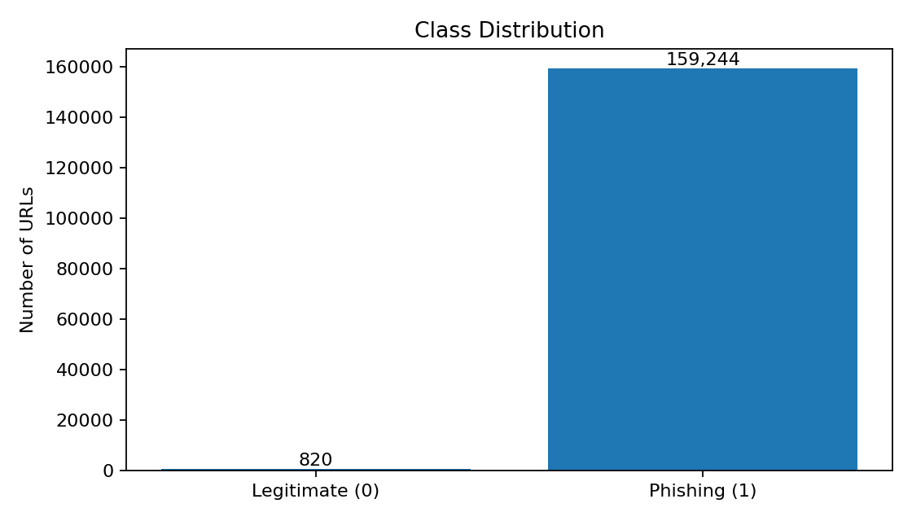
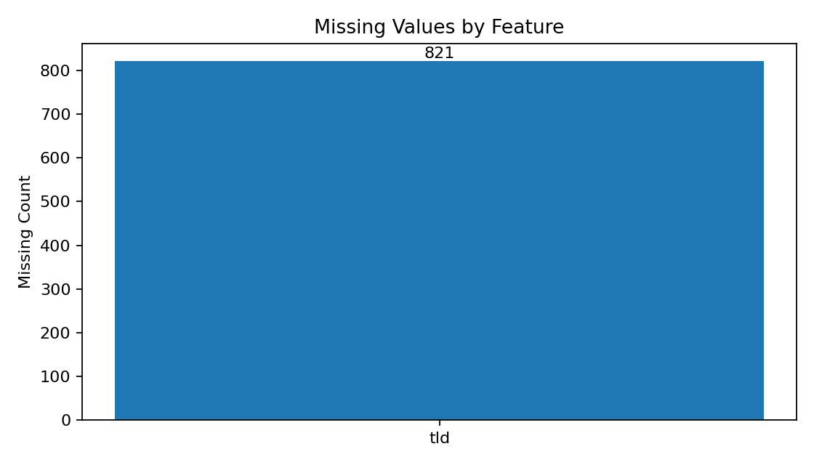
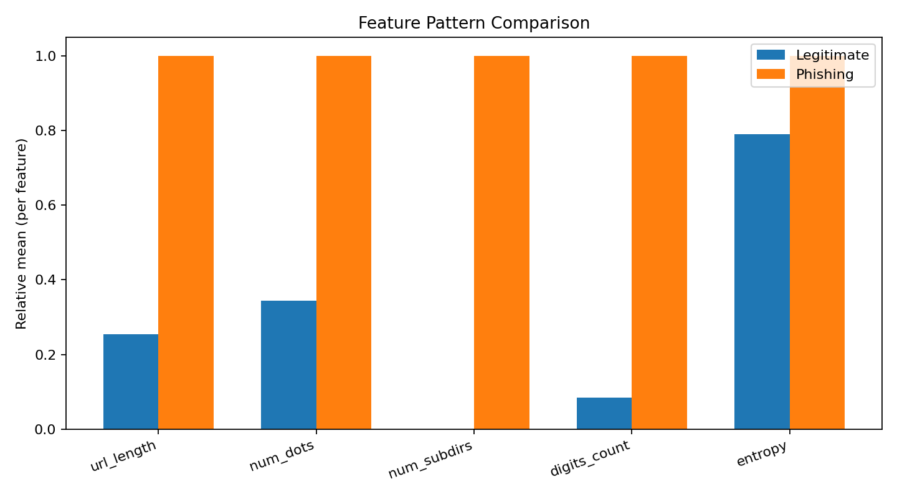
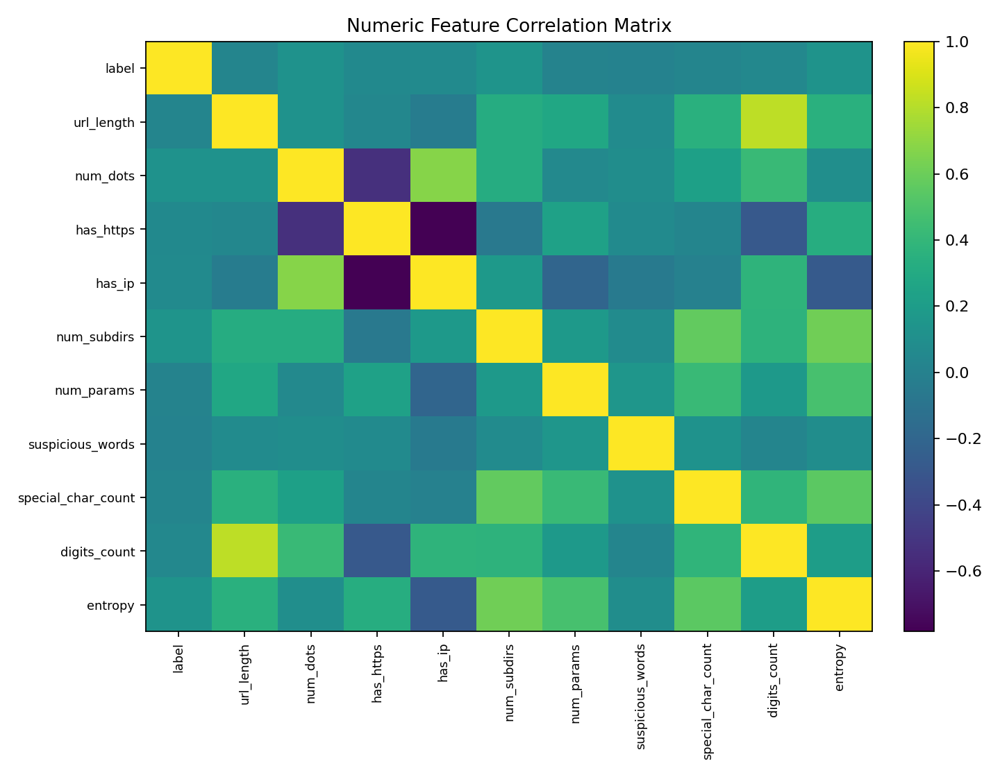
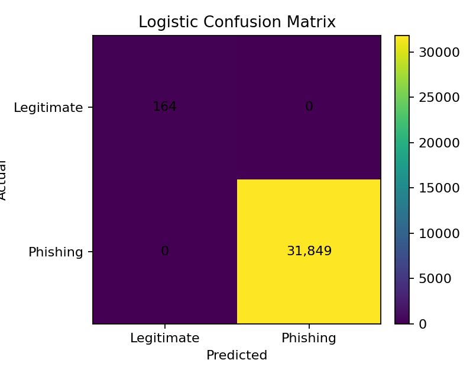
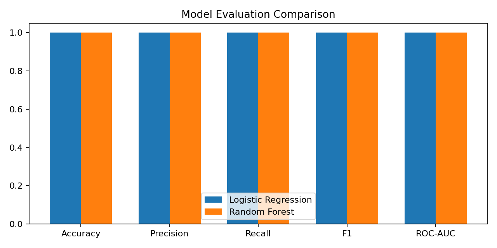
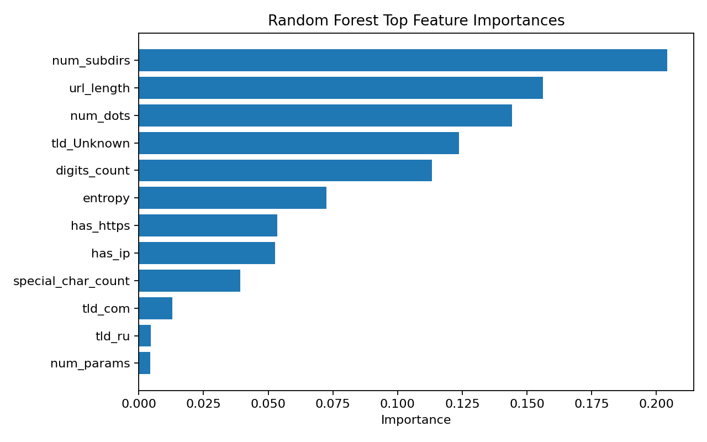

Can machine learning detect phishing URLs?
The main research question is whether structural and lexical URL features can be used to accurately distinguish phishing URLs from legitimate URLs.
The main research question is whether structural and lexical URL features can be used to accurately distinguish phishing URLs from legitimate URLs.
Phishing websites try to trick users into giving away usernames, passwords, financial information, or other sensitive data. Automatic URL screening can help identify suspicious links before a user visits them.
Machine Learning for Phishing URL Detection
Phishing URLs Dataset with Extracted Features. The Kaggle dataset contains 160,064 URLs with features that describe parts of each URL, including URL length, number of dots, HTTPS use, IP address usage, suspicious words, digits, special characters, subdirectories, and entropy. The target variable is label, where 1 represents phishing and 0 represents legitimate.
Phishing websites are designed to trick users into visiting fake or malicious websites and giving away sensitive information such as usernames, passwords, or financial information. This project focuses on detecting phishing URLs by using machine learning to analyze patterns and characteristics found in the URL.
Can machine learning models accurately identify phishing URLs based on structural and lexical features found in the URL?
The project begins with exploratory data analysis to understand the dataset, check for missing values, duplicates, class imbalance, and important feature patterns. The data is then preprocessed by filling missing values, encoding the tld column, scaling numerical features, removing the raw URL column from the model input, using a stratified 80/20 train/test split, and applying class weighting to help with the large class imbalance. Two machine learning models are trained and compared: Logistic Regression and Random Forest. The models are evaluated using accuracy, precision, recall, F1-score, ROC-AUC, confusion matrix, false positive rate, and false negative rate. The final results are also interpreted from a cybersecurity perspective.
The expectation is that both Logistic Regression and Random Forest will be able to identify phishing URLs using the extracted URL features. Random Forest may perform better because it can capture more complex patterns between features, while Logistic Regression provides a simpler baseline for comparison. Features such as URL length, number of subdirectories, number of digits, number of dots, suspicious words, and entropy are expected to be useful for identifying phishing URLs. Because the dataset is highly imbalanced, model performance will not be judged only by accuracy. Precision, recall, F1-score, confusion matrix results, and false positive and false negative rates will also be important.
I selected the Phishing URLs Dataset with Extracted Features from Kaggle. The dataset contains 160,064 URLs and 13 columns. The target column is label, where 1 represents phishing and 0 represents legitimate URLs.
Dataset source: Open the Kaggle dataset ↗
The security problem I am focusing on is phishing websites. Phishing sites are designed to look trustworthy so users will enter sensitive information. This project tests whether machine learning can help identify phishing URLs by looking at characteristics such as length, digits, dots, subdirectories, special characters, and entropy.
I explored the dataset before training any models so I could understand its quality, balance, and feature patterns.
Only the tld column has missing values: 821.
0 duplicate rows were found.
159,244 records (99.49%).
820 records (0.51%).




Phishing URLs in this dataset tend to be longer and contain more dots, subdirectories, digits, and entropy than legitimate URLs. The biggest issue is the extreme class imbalance, so accuracy alone would not be enough to judge the models.
Before training the machine learning models, the dataset was prepared so the data could be used correctly and consistently.
The dataset contains 821 missing values in the tld column.
Instead of deleting those rows, the missing values were replaced with Unknown. This keeps the records in the dataset while still giving the model a valid category to work with.
The dataset was checked for duplicate rows.
Duplicate rows found: 0
Since no duplicates were found, no rows needed to be removed.
The tld column contains text values such as .com, .org, .net, and .xyz.
Machine learning models cannot directly use text categories, so the tld column was converted into numerical form using one-hot encoding. This allows the model to use the top-level domain as a feature without treating one domain as being numerically higher or lower than another.
Some numerical features have very different ranges. For example, url_length can have much larger values, has_https is only 0 or 1, and entropy is usually a smaller decimal value.
For Logistic Regression, the numerical features were standardized so they are on a more comparable scale. This helps prevent features with larger numeric ranges from having too much influence. Random Forest does not require scaling, but preprocessing was kept consistent through a pipeline.
The raw url column was removed from the machine learning input because the dataset already contains extracted URL features.
The features used include url_length, num_dots, has_https, has_ip, num_subdirs, num_params, suspicious_words, tld, special_char_count, digits_count, and entropy.
The target variable is label, where 1 = phishing and 0 = legitimate.
The dataset is highly imbalanced:
To reduce the effect of this imbalance, a stratified train/test split was used and the machine learning models used class_weight="balanced". This helps give more importance to the much smaller legitimate class.
The dataset was divided into 80% training data and 20% testing data.
A stratified split was used so the phishing-to-legitimate ratio stayed similar in both the training and testing sets. This allows the models to train on most of the data while still being evaluated on unseen examples.
Why these steps are necessary: These preprocessing steps help make the dataset clean, usable, and consistent for machine learning. They also help address the strong class imbalance and prepare the data for Logistic Regression and Random Forest.
A simple classification model that estimates the probability of a URL belonging to the phishing class. I used class weighting and standardized numeric features.
An ensemble of decision trees that can capture more complex, nonlinear relationships between URL features. I trained 100 trees with balanced class weighting.
The models were evaluated on the held-out 20% test set.
| Model | Accuracy | Precision | Recall | F1 | ROC-AUC | FP | FN |
|---|---|---|---|---|---|---|---|
| Logistic Regression | 1.000 | 1.000 | 1.000 | 1.000 | 1.000 | 0 | 0 |
| Random Forest | 1.000 | 1.000 | 1.000 | 1.000 | 1.000 | 0 | 0 |


num_subdirs is 0 for every legitimate URL in this dataset, while phishing URLs have at least 2. That makes the classes much easier to separate and is an important limitation of the dataset.
This section explains what the machine learning results mean from a cybersecurity point of view, not just how well the models scored.
The models are designed to detect phishing URLs. These URLs may be used to trick users into visiting fake websites and entering usernames, passwords, banking information, credit card details, or other personal information.
Phishing URLs can be harder to detect when they are designed to look like legitimate websites. They may use HTTPS, short and clean-looking addresses, normal domain names, or avoid obvious suspicious words.
Some of the strongest differences in this dataset appear in url_length, num_subdirs, digits_count, num_dots, and entropy. Phishing URLs generally tend to be longer and more complex than legitimate URLs.
A false positive happens when a legitimate website is incorrectly classified as phishing. This can block safe websites, create unnecessary security warnings, increase analyst workload, and reduce user trust in the system.
A false negative happens when a phishing website is incorrectly classified as legitimate. This is especially dangerous because users may visit the site and expose usernames, passwords, financial information, or other sensitive data.
A phishing detection model like this could be used as one part of a larger security system, such as an email filter, browser warning system, URL reputation service, SOC monitoring workflow, web gateway, or automated link-scanning tool.
The model only uses URL-based features. A real-world phishing detector should also consider webpage content, domain reputation, certificate information, domain age, DNS information, threat intelligence, and changing attacker behavior.
The results show that URL-based features can be useful for phishing detection. However, perfect results on this dataset do not mean every real phishing attack can be detected. This type of model would be most useful as an additional security layer combined with other detection methods.
I also inspected Random Forest feature importance. The strongest features in this run included number of subdirectories, URL length, number of dots, missing/unknown TLD status, and digit count.

The project shows that machine learning can identify patterns in URL features that are useful for phishing detection. Both models performed perfectly on this particular test split, but the dataset itself contains very strong class-separation patterns. Because of that, the most important conclusion is not that the models are perfect, but that dataset quality and realistic evaluation are critical when building security machine-learning systems.
Dataset: Victus Adi, Phishing URLs Dataset with Extracted Features, Kaggle.
The analysis, preprocessing, model training, evaluation, charts, and security interpretation on this page were produced for this project. External libraries used include pandas, NumPy, Matplotlib, and scikit-learn.
View Dataset on Kaggle ↗